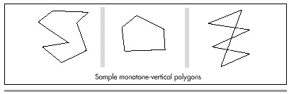
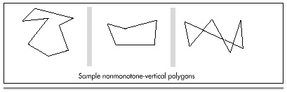

| Previous | Table of Contents | Next |
Listings 41.2 and 41.3 are variants of the fast convex polygon fill code from Chapter 39, modified to be able to handle all monotone-vertical polygons, including nonsimple ones; the edge-scanning code (Listing 39.4 from Chapter 39) remains the same, and so is not shown again here.

Figure 41.1 Monotone-vertical polygons.

Figure 41.2 Non-monotone-vertical polygons.
LISTING 41.2 L41-2.C
/* Color-fills a convex polygon. All vertices are offset by (XOffset, YOffset).
“Convex” means “monotone with respect to a vertical line”; that is, every
horizontal line drawn through the polygon at any point would cross exactly two
active edges (neither horizontal lines nor zero-length edges count as active
edges; both are acceptable anywhere in the polygon). Right & left edges may
cross (polygons may be nonsimple). Polygons that are not convex according to
this definition won’t be drawn properly. (Yes, “convex” is a lousy name for
this type of polygon, but it’s convenient; use “monotone-vertical” if it makes
you happier!)
*******************************************************************
NOTE: the low-level drawing routine, DrawHorizontalLineList, must be able to
reverse the edges, if necessary to make the correct edge left edge. It must
also expect right edge to be specified in +1 format (the X coordinate is 1 past
highest coordinate to draw). In both respects, this differs from low-level
drawing routines presented in earlier columns; changes are necessary to make it
possible to draw nonsimple monotone-vertical polygons; that in turn makes it
possible to use Jim Kent’s test for monotone-vertical polygons.
*******************************************************************
Returns 1 for success, 0 if memory allocation failed */
#include <stdio.h>
#include <math.h>
#include <stdlib.h>
#include “polygon.h”
/* Advances the index by one vertex forward through the vertex list,
wrapping at the end of the list */
#define INDEX_FORWARD(Index) \
Index = (Index + 1) % VertexList->Length;
/* Advances the index by one vertex backward through the vertex list,
wrapping at the start of the list */
#define INDEX_BACKWARD(Index) \
Index = (Index - 1 + VertexList->Length) % VertexList->Length;
/* Advances the index by one vertex either forward or backward through
the vertex list, wrapping at either end of the list */
#define INDEX_MOVE(Index,Direction) \
if (Direction > 0) \
Index = (Index + 1) % VertexList->Length; \
else \
Index = (Index - 1 + VertexList->Length) % VertexList->Length;
extern void ScanEdge(int, int, int, int, int, int, struct HLine **);
extern void DrawHorizontalLineList(struct HLineList *, int);
int FillMonotoneVerticalPolygon(struct PointListHeader * VertexList,
int Color, int XOffset, int YOffset)
{
int i, MinIndex, MaxIndex, MinPoint_Y, MaxPoint_Y;
int NextIndex, CurrentIndex, PreviousIndex;
struct HLineList WorkingHLineList;
struct HLine *EdgePointPtr;
struct Point *VertexPtr;
/* Point to the vertex list */
VertexPtr = VertexList->PointPtr;
/* Scan the list to find the top and bottom of the polygon */
if (VertexList->Length == 0)
return(1); /* reject null polygons */
MaxPoint_Y = MinPoint_Y = VertexPtr[MinIndex = MaxIndex = 0].Y;
for (i = 1; i < VertexList->Length; i++) {
if (VertexPtr[i].Y < MinPoint_Y)
MinPoint_Y = VertexPtr[MinIndex = i].Y; /* new top */
else if (VertexPtr[i].Y > MaxPoint_Y)
MaxPoint_Y = VertexPtr[MaxIndex = i].Y; /* new bottom */
}
/* Set the # of scan lines in the polygon, skipping the bottom edge */
if ((WorkingHLineList.Length = MaxPoint_Y - MinPoint_Y) <= 0)
return(1); /* there’s nothing to draw, so we’re done */
WorkingHLineList.YStart = YOffset + MinPoint_Y;
/* Get memory in which to store the line list we generate */
if ((WorkingHLineList.HLinePtr =
(struct HLine *) (malloc(sizeof(struct HLine) *
WorkingHLineList.Length))) == NULL)
return(0); /* couldn’t get memory for the line list */
/* Scan the first edge and store the boundary points in the list */
/* Initial pointer for storing scan converted first-edge coords */
EdgePointPtr = WorkingHLineList.HLinePtr;
/* Start from the top of the first edge */
PreviousIndex = CurrentIndex = MinIndex;
/* Scan convert each line in the first edge from top to bottom */
do {
INDEX_BACKWARD(CurrentIndex);
ScanEdge(VertexPtr[PreviousIndex].X + XOffset,
VertexPtr[PreviousIndex].Y,
VertexPtr[CurrentIndex].X + XOffset,
VertexPtr[CurrentIndex].Y, 1, 0, &EdgePointPtr);
PreviousIndex = CurrentIndex;
} while (CurrentIndex != MaxIndex);
/* Scan the second edge and store the boundary points in the list */
EdgePointPtr = WorkingHLineList.HLinePtr;
PreviousIndex = CurrentIndex = MinIndex;
/* Scan convert the second edge, top to bottom */
do {
INDEX_FORWARD(CurrentIndex);
ScanEdge(VertexPtr[PreviousIndex].X + XOffset,
VertexPtr[PreviousIndex].Y,
VertexPtr[CurrentIndex].X + XOffset,
VertexPtr[CurrentIndex].Y, 0, 0, &EdgePointPtr);
PreviousIndex = CurrentIndex;
} while (CurrentIndex != MaxIndex);
/* Draw the line list representing the scan converted polygon */
DrawHorizontalLineList(&WorkingHLineList, Color);
/* Release the line list’s memory and we’re successfully done */
free(WorkingHLineList.HLinePtr);
return(1);
}
| Previous | Table of Contents | Next |